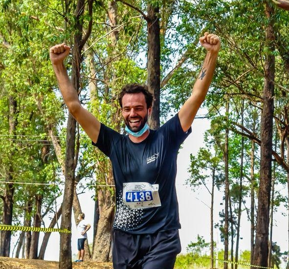
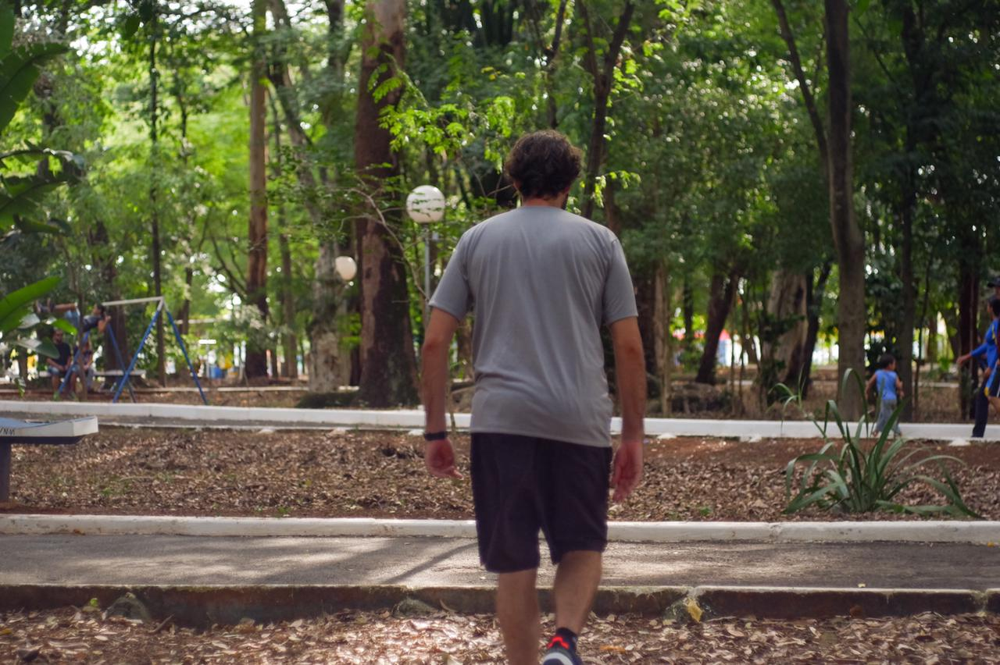

Treinar com treinador individual funciona?
 Pensando no bem estar, na saúde, na hipertrofia, no emagrecimento, ou em qualquer outra meta
que tenha quando você busca alguma opção de exercício físico, devemos nos questionar: o que está fazendo é o suficiente?
Será que se você for acompanhado por um profissional de perto, seus objetivos seriam otimizados?
Qual seu bem mais precioso?
Se você é um estudante, arquiteto, engenheiro, médico, pedreiro, a procura de um emprego, professor, entre as milhões de profissões que existem nesse mundão afora, desculpe, este artigo não é para ti. Porém, se você for uma pessoa, é, pode continuar lendo que possa ter informações proveitosas a você.
Ansiedade no basquete universitário feminino

A ansiedade pode influenciar significativamente o rendimento do atleta no jogo. O objetivo do trabalho foi analisar a ansiedade traço e estado referentes às situações competitivas e correlacionar com as variáveis de ansiedade e autoconfiança.
O que é um treino individualizado no basquete ?!?

Já pensou no basquete como um complexo sistema cheio de detalhes? Não sendo resumido apenas aos fundamentos primários da modalidade. Te convido a pensar de uma outra perspectiva.
Conhecendo o esporte universitário paulista

O esporte universitário não se comporta de forma linear, tecendo suas próprias características, não devendo ser comparadas com outras vertentes do esporte, necessitando pesquisas e intervenções específicas à realidade.